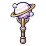
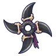
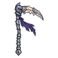
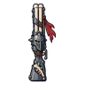
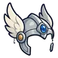
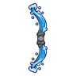

หุ่นช่างซ่อม
มอนธาตุไม่มีธาตุ Lv 89–94
เจอที่
| แมพ | โซน | Lv | ภูมิภาค |
|---|---|---|---|
| โรงหุ่นใต้วิหาร ชั้น 1 · ห้องขัง | 89–91 | เมืองหอระฆัง | |
| โรงหุ่นใต้วิหาร ชั้น 2 · โต๊ะช่าง | 91–94 | เมืองหอระฆัง | |
| หอรากมืด (Dark Root) | หัวใจต้นไม้มืด | 90–99 |
ค่าสถานะตามเลเวล
| Lv | HP | ATK | DEF | MDEF | EXP | Job |
|---|---|---|---|---|---|---|
| 89 | 51,122 | 126–190 | 25 | 35 | 117 | 88 |
| 91 | 54,436 | 130–195 | 25 | 35 | 119 | 89 |
| 94 | 59,403 | 138–207 | 26 | 37 | 123 | 92 |
ตีด้วยธาตุไหนดี
แรงขึ้น: —
เบาลง: วิญญาณ ×0.25
วัตถุดิบที่ดรอป
| ของ | โอกาส | |
|---|---|---|
| ประแจจิ๋วของหุ่น | 55% | 1 ชิ้น (15% ได้ 2) |
อุปกรณ์ที่ดรอป (7)
| ของ | โอกาส |
|---|---|
| 0.25% | |
 ออร์บดาวเคราะห์วงแหวน | 0.25% |
 ดาวยักษ์ดาบอัศวินกระดูก | 0.12% |
 เคียวใหญ่อัศวินกระดูก | 0.12% |
 ลูกซองอัศวินกระดูก | 0.12% |
 หมวกเกราะปีกเงิน | 0.08% |
 ธนูน้ำตกราตรี | 0.06% |
สกิล
ดึง (Lv 25+) · ดึง (Lv 60+) · ทุบพื้น (Lv 60+)